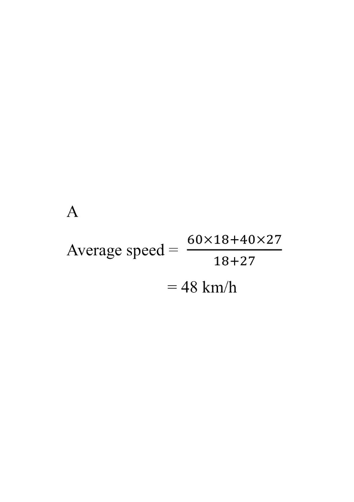

Two legs of the journey — see the speed–time picture.
Leg 1: 60 km/h, 18 min Leg 2: 40 km/h, 27 min Whole journey
[2024MC#12] Rate, Ratio and Variations
A car travels at an average speed of $60$ km/h for $18$ minutes and then the car travels at an average speed of $40$ km/h for $27$ minutes. The average speed of the car for the whole journey is
A. $48$ km/h.
B. $50$ km/h.
C. $52$ km/h.
D. $54$ km/h.

Figure (original exam diagram)
1Identify the two legs of the journey
Leg 1: speed $=60$ km/h, time $=18$ min. Leg 2: speed $=40$ km/h, time $=27$ min.
These are two different speeds, so we cannot simply take $\dfrac{60+40}{2}$.
Hint: "Average speed" means total distance ÷ total time, not the mean of the two speeds.
Total time $=\dfrac{18}{60}+\dfrac{27}{60}=\dfrac{45}{60}=0.75$ h $=45$ min.
Hint: Keep the same unit (hours) for speed and time, or work directly in minutes — both give the same answer.
3Find the distance of each leg
Distance, Speed and Time\(\text{distance}=\text{speed}\times\text{time}\)Each leg is converted separately: \(45\times\dfrac{1}{3}=15\) km and \(30\times\dfrac{2}{3}=20\) km.
$$\text{Distance}=\text{Speed}\times\text{Time}$$
Leg 1: $60\times\dfrac{18}{60}=60\times 18\text{ min-units}=18$ km (using the 60-based minute shortcut).
Leg 2: $40\times\dfrac{27}{60}=40\times 27\text{ min-units}=18$ km.
Total distance $=18+18=36$ km.
Hint: Working in "minute units" ($\text{km/h}\times\text{min}$) is safe because the $60$ cancels at the end.
4Apply the average-speed formula
Average Speed\(\text{average speed}=\dfrac{\text{total distance}}{\text{total time}}\)It is not the mean of the two speeds; here it equals \(\dfrac{15+20}{1}=35\) km/h.